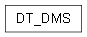

DT_DMS module¶

Copyright (C) 2026 : Milad Zahediyami
This program is free software: you can redistribute it and/or modify it under the terms of the GNU General Public License as published by the Free Software Foundation, either version 3 of the License, or (at your option) any later version.
This program is distributed in the hope that it will be useful, but WITHOUT ANY WARRANTY; without even the implied warranty of MERCHANTABILITY or FITNESS FOR A PARTICULAR PURPOSE. See the GNU General Public License for more details.
You should have received a copy of the GNU General Public License along with this program. If not, see <http://www.gnu.org/licenses/>.
author Milad Zahediyami (milad.zahediyami@u-bordeaux.fr) IMS (UMR CNRS 5218 / University of Bordeaux)
DT_DMS.py
Top-level Digital Twin Data, Model, Service (DMS) framework class. Holds the collections of Data sources, Models, and Services that make up a Digital Twin, and exposes the add_data / add_model / add_service registration methods used by concrete orchestrators (e.g. DT_DMS_SineCubicBP).
Also contains the ‘main’ entry point of the whole program, exactly like the original Java file (src/DT_DMS .java) which held ‘public static void main’.